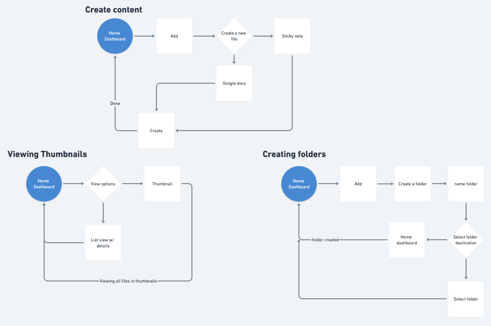
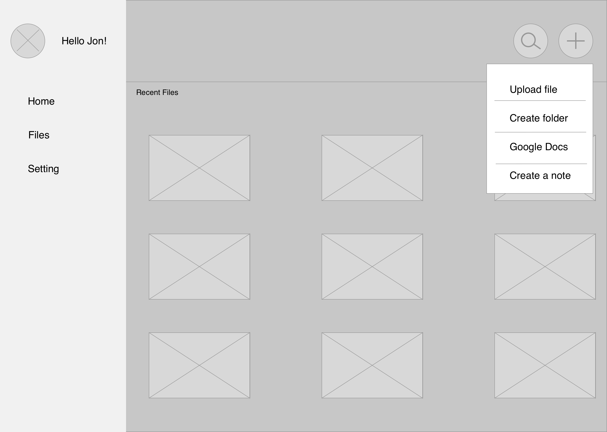
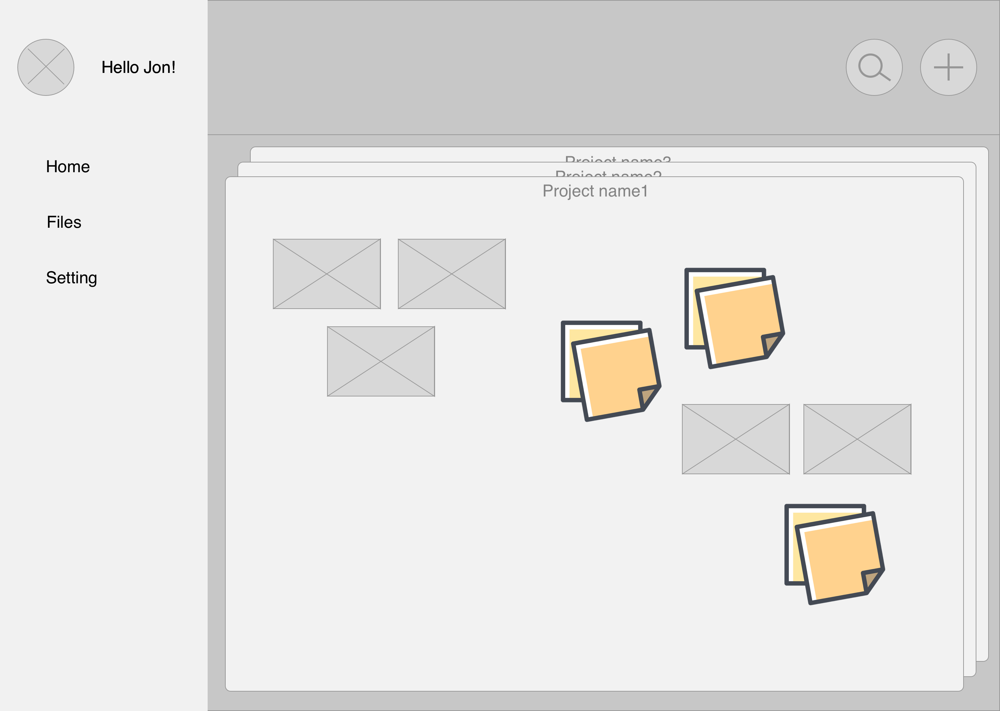
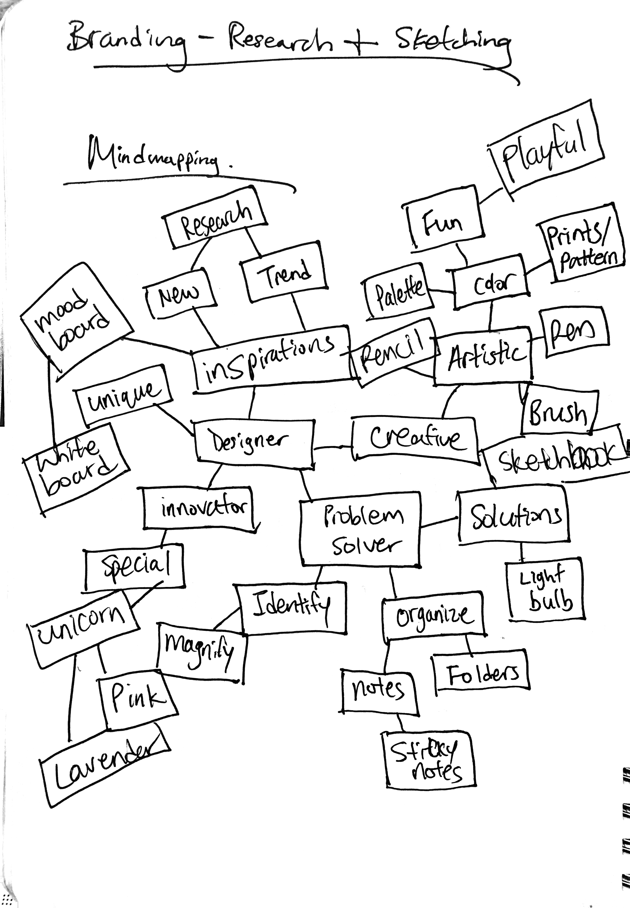
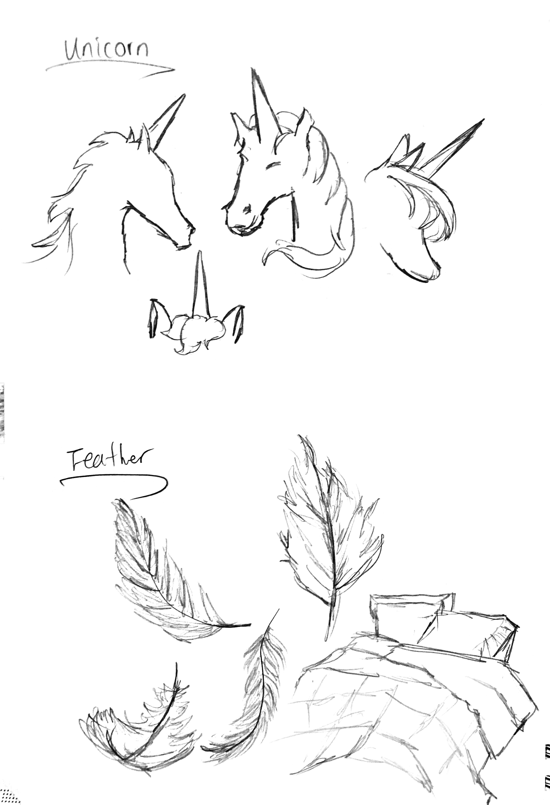
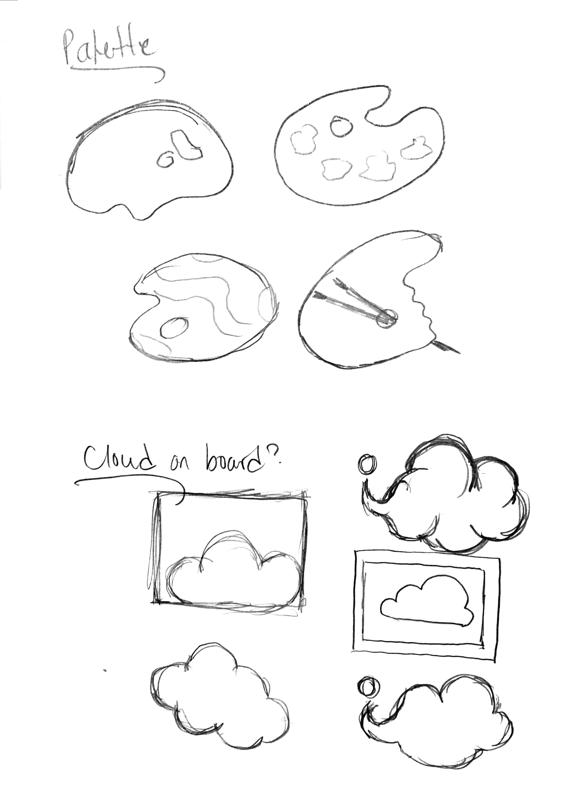
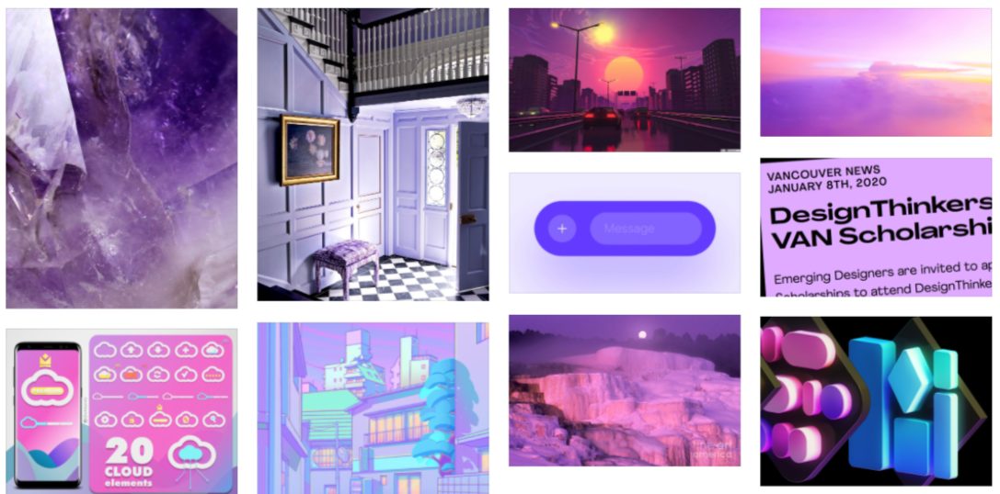
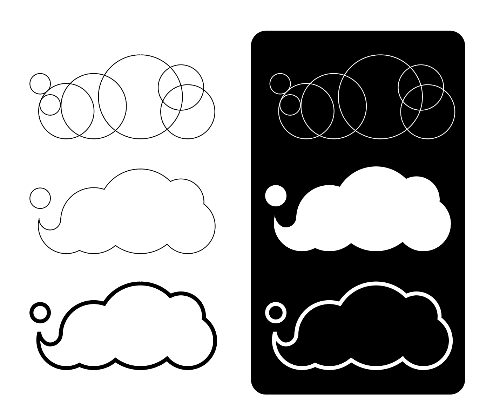
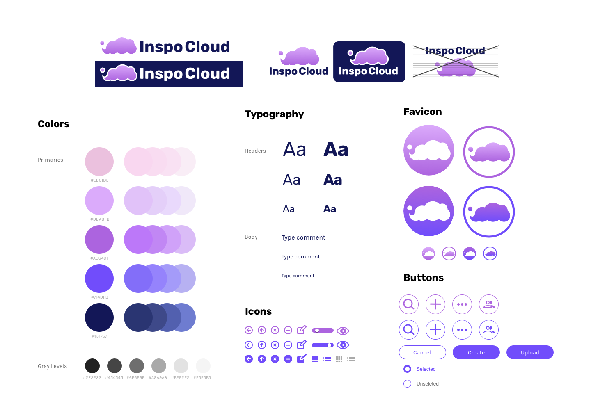

Summary
Inspo cloud is a designer and creators focused cloud storage product. Its aim is to provide users with the freedom to organize their work and ideas with an engaging experience than any other cloud storage product.
A group of designers that uses cloud storage daily expressed frustrations with their current platforms. Inspo Cloud is to introduce the tools to give them more control and user-friendly features focused on their needs.
Problem
There’s no cloud storage in the market that fits Designers’ needs.
According to a user survey with participants of designers, there were expressed frustrations with the big-name cloud storage in the market. Design files are unable to preview unless downloaded from the cloud which adds another step and takes time. Also, users had difficulties finding files if they forgot the file name. This survey showed that there was an opportunity to improve viewing and organizing features catering to designers.

Thumbnails for design files like Figma, Sketch, and Illustrator on Google Drive which makes it hard for users to quickly find a file.
Solutions
Providing more visuals means quick access.
By allowing all design files to display a thumbnail preview, users can easily identify what they are looking for. Along with keyword search and thumbnail preview, users can open the file assuring that it’s the correct file.

Giving users tools to organize their work and Ideas.
Many designers are intuitive to digital artboards and physical boards. By expanding on that intuition, users can organize files, notes, and folders on multiple boards.

Process
Research
Online survey on cloud storage usage provided insights from designers.
More than 70% of the participants are working full-time and use cloud storage for their work.
Takeaways from Survey Analysis
- 100% of the participants use cloud storage
- Designers are uploading design files into the cloud
- Should be able to preview files no matter what the file type is
- Keyword search doesn’t work everytime
- Easier ways to organize
- More visuals and creative options to organize files
- Better layouts to view files
Competitive Analysis
Top 3 most used cloud storage platforms from the online survey were compared.
These cloud storage services are designed for large audiences and don't fully provide features catered for designers. The options for viewing and creating new files are limited and lack quality features for designers.
Read in-depth competitive AnalysisUser Personas
Personas were created with the most important goals and frustrations for our target audience with user research and competitive analysis.
Katie
28 yo, Graphic Designer, Los Angeles
“I’m working with several different clients on similar projects so it’s important to stay organized and not mix up my flies.”
Katie’s schedule is packed with several design projects with different clients. She uses cloud storage to share and send her work to the client. It’s super important to keep files organized and that her clients receive the fils and have access to them.
Goals
- Keeping projects separate per client
- Share and send work to clients
- Collaborate with in-house designers
Frustrations
- Clients using different design programs or cloud storage
- No previews of design files
- Not knowing when the client viewed the file after sending a shareable link

Ray
32 yo, Interior Designer, New York City
“Clicking through piles of design inspirational pictures takes too long, I need to view all the files and create a board quickly.”
Ray is constantly looking out for new trends online and in-person. He collects photos of all the design details, prints, tags, and anything else that he wants to show his team. He uploads them to the cloud storage to share with his team, but there are too many photos to sort through.
Goals
- Organize a cluster of photos
- Create seasonal design concepts
- Share new design trend with the team
Frustrations
- Often forgets the photos’ source
- Using other programs to create boards
- Unsure who has editing access
Design
What will make Inspo Cloud stand out?
Information Architecture
I sketched out user flows to show the simplest way a user can approach tasks on Inspo Cloud.
After hand sketching and mapping out several user-flows, they are prioritized again on digital user flows.
Site Map
What other screens are involved and how do they all structure together?
The site map was an essential part of the design process for planning several ways a user can access their files on each screen.
Wireframes
Initial sketches of screen design.
Hand sketches
  View all digital low-fidelity mock-upUsability Testing
Low fidelity usability testing was an essential part of the process leading to a high fidelity mock-up to save time.
Tasks for testing:
- Sign up for an account
- Adding a piece of content
- Organizing a piece of content
What valuable feedback was given?
- Button placements and size should be consistent.
- The page titles should be chosen with more thoughts, updating Files tab to Boards to represent its key purpose.
Branding
What makes Inspo Cloud unique?
Mind-mapping exercise
Below are the 5-6 sketches that were created after mind-mapping. The first sketches of the palette could be polished to be an abstract cloud with multiple colors. The cloud is a bit overdone in the cloud storage market, but adding the abstract “i” makes it unique and a marketable logo. The board is a simple logo but thought it represents the product’s key feature. It could be improved with brand’s logo abbreviation. Going into a more fun direction, sketching diamonds, unicorns, and feathers. They represent unique, special, creative freedom, and reliance.
 Branding Refinement
 Style Guide
Preference Testing
After conducting the first usability testing, I learned that the button size and placement are part of designing a site that is intuitive for users. This preference testing was to see which visuals the users prefer with overall branding.

Preference testing for logo options at sign up page

Preference testing for button size and alignment at sign up page

Preference testing for dashboard colorstyle
Clickable Prototype Usability Testing
With a polished high fidelity prototype, another usability testing was conducted for feedback.
Tasks
- Log into the account
- Create a new folder
- Upload a file
Revision Required
The font was increased in size and also darkened to stand out. It was a very small minor change, but a change that applies to the entire site.
Final Thoughts
With a narrowed audience to cloud storage for designers, I’ve learned how designers use cloud storage platforms and what they would like to see in a new cloud storage. There are many satisfied users of their current platforms, but also many frustrations that could be opportunities for Inspo Cloud. List of new ideas for Inspo Cloud had to be prioritized with our personas in mind. To avoid dumping all the features that our competitors don’t have, the design process of user stories was so helpful directing the project forward.